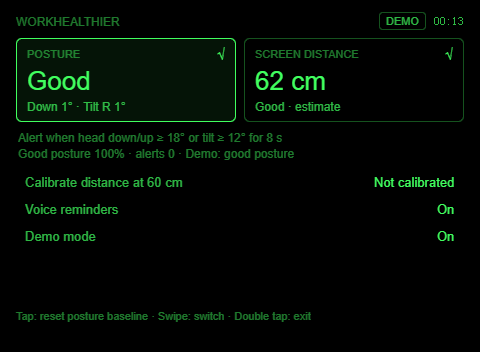
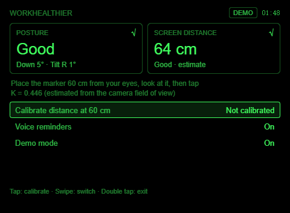
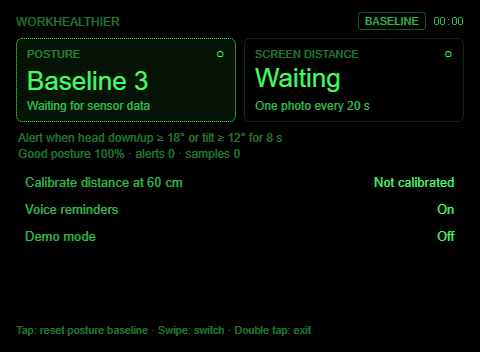

WorkHealthier
A desk-health agent for Rokid Glasses: it watches how you hold your head, how far your eyes are from the monitor, and how long you have been sitting, and reminds you on the lens (and out loud) when something needs fixing.
Repository: github.com/cnYui/WorkHealthier · Studio import directory: agent
First, an honest constraint
The request asked for infrared or laser ranging. Neither exists on this platform: AIUI 0.17's device APIs are Bluetooth, Accelerometer, AbsoluteOrientationSensor, Gyroscope and BatteryManager, and the Rokid Glasses hardware carries one 12 MP camera plus an IMU, no ToF module.
| Need | What the agent does | Official basis |
|---|---|---|
| Posture (head down, head tilt) | Page-scoped AbsoluteOrientationSensor via enableWorldAwareness(); the rotation-vector sensor already fuses the gyroscope | Page API docs, samples/gyroscope-test |
| Eye-to-screen distance | One low-resolution photo every 20 s, BarcodeDetector finds a QR marker (WH:50) on the monitor, distance from its apparent size, one-tap calibration | samples/scanner pipeline |
| Sitting too long | Reminder after 45 minutes of continuous monitoring | — |
Architecture: one Page, pure logic underneath
agent/ Studio import root app.json pages + CAMERA permission AGENTS.md identity, voice routing, limits pages/monitor/index.ink the only Page (UI + orchestration) lib/quat.js quaternion math, axis convention lib/posture.js posture state machine lib/distance.js marker ranging + calibration lib/session.js clock + sedentary reminder lib/capture.js photo → decode → detect lib/temple.js temple input de-duplication lib/demo.js scripted scenario lib/env.js runtime info, local settings tests/ 42 Node tests (not imported)
Why this split
- Every threshold, timer and fallback lives in modules that take
nowas an argument, so behaviour is deterministic and unit-tested. - The Page only wires sensors, camera, keys and rendering; it pushes only changed keys to
setData. - No backend, no network: everything runs on the glasses; calibration and the voice switch persist in
localStorage.
Posture pipeline
| Signal | Watch | Poor (alert after 8 s) | Clears |
|---|---|---|---|
| Head down / up | ≥ 10° | ≥ 18° | 2 s of recovery; 60 s cooldown after a tap/nod dismiss |
| Head tilt | ≥ 7° | ≥ 12° | same |
The baseline is captured 3 s after start and can be re-captured with a tap on the posture tile. The axis map (X = nod, Y = turn, Z = tilt) follows the official diagnostic sample; a wrong sign only swaps the Down/Up label.
Distance pipeline
Kdefaults to 0.446 (≈ 96° horizontal field of view) and is replaced by a one-tap calibration at a known distance, which cancels the marker-size error.- Too close: under 45 cm for 15 s and at least two samples → alert; 45–52 cm shows "Close"; above 85 cm "Far".
- Three consecutive misses → "No marker" with the last reading kept; permission denial or a host that rejects timer-driven photos switches to tap-to-measure.
- The marker page
docs/marker.htmlshows the QR at 30 / 50 / 80 mm with a ruler to check the monitor's physical scale.
The screen


| Temple | Keys (simulator) | Effect |
|---|---|---|
| Tap | GlobalHook → Enter | Dismiss the alert, else the focused action (re-baseline · measure · calibrate · voice · demo) |
| Swipe | GlobalHook → ArrowUp / ArrowDown | Move focus |
| Double tap · nod | Backspace (host) · world-awareness nod | Exit · dismiss the alert |
Alerts

- Every state uses a label plus a shape, never luminance alone (single green channel).
- Voice: one short spoken prompt per alert through
speechSynthesis, at least 20 s apart, switchable. - Chat card (448 × 150):
@media (max-height: 240px)keeps only the status line and the two tiles.
Testing ladder
| Layer | Result | What it proves |
|---|---|---|
| Unit tests (Node) | 42 pass | All pure logic, including a replay of the whole demo script through both state machines |
| Strict project validation | exit 0 | Manifest, routes, .ink blocks, claims ledger |
| AIX pack / list / preview | pass | Package contents; layout, focus, tap actions and the demo fallback in the browser Ink runtime |
| AIUI Studio simulation | see status slide | Host-like keys, chat card, effect preview |
| Physical glasses | not yet | Sensor data, axis signs, camera policy, decode time, nod, speech |
The generated audit (docs/aiui-audit.md) keeps every row BLOCKED until signed Studio and device evidence exists; that is by design of the validation skill.
Demo mode
Runtimes without a sensor and camera (the Studio web simulator, the AIX browser preview) drop into a 150-second scripted loop after a 6 s sensor timeout: good → head down → recovered → too close → recovered → head tilt → marker out of view → all good. Every alert can be seen and dismissed without hardware, and the demo row shows the measured tick period.

In AIUI Studio
- GitHub import of
github.com/cnYui/WorkHealthier/tree/main/agentcreates the projectcnYui/WorkHealthier. /debug Run pages/monitor/indexopens the Page as a chat card (448 × 150 compact layout); "进入" moves it into the 480 × 352 effect preview.- The simulator delivers a constant pose, so posture reads Good at 0°; the camera photo is rejected, so distance stays on Waiting / Stopped until a real device.
Status and next steps
Done
- Complete Studio-importable project, English-only, monochrome-green design tokens.
- Deterministic posture, distance, session and input logic with tests.
- Demo fallback, calibration flow, marker page, audit matrices.
To verify on the glasses
enableWorldAwareness()deliveringreadingevents; axis signs.- Whether
takePhoto()may run from a timer; WebP decode time at low quality. - Nod dismissal, speech synthesis volume, readability over bright scenes.
- Studio review form: tick the camera permission and state its purpose.